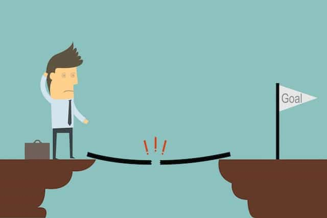
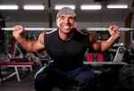
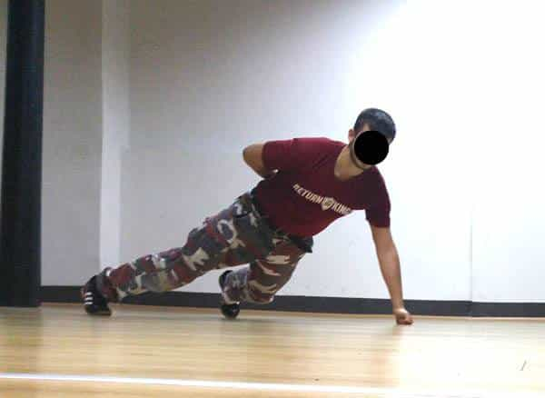

Small arms can often be a major source of frustration, and in some cases, embarrassment for many men. It’s a regular problem for naturally skinny guys who just want to pack on some size and look bigger in a t-shirt. Small arms also tend to lead to poor symmetry, proportions and other aesthetically un-pleasing results.
I have discovered quite a few tricks you can perform to bring up your weak points if they are frustrating you. I will share with you what I performed last year in order to bring my lagging arms up, and you can definitely do this too:
1. Write Down Your Goal

This goal is so important as it gives you some direction, motivation, and it keeps you accountable for success (or lack of). For example, if currently your arms are 14 inches and you want 16 inch arms as quickly as possible, then set this down as a goal. You must measure your progress every single week to ensure that you’re staying on track.
I found weekly progress updates to be very motivating. When I saw measurable improvements in my arm size, it made me hungrier for more growth and this meant that I trained harder in the gym. The same will apply to you. You can achieve massive arm growth provided you are motivated, and that you specialise.
2. Specialisation

You will need to back off on other body parts at least to some degree. It’s no use going into the gym and blasting your entire body every session. Remember that the goal here is to achieve rapid arm growth. If you hit fifteen sets of squats and deadlift every week, it’s going to be nearly impossible to do this for a recovery standpoint.
Continue training everything else, however, reduce the number of sets per week. For example, for squats, deadlifts, and any other exercises that aren’t going to directly target your arms, only perform 5-8 sets per week. Personally, I found that 5-8 sets was the sweet spot for maintaining size in all the other areas, without impacting my recovery from arm workouts.
3. Arm Training

For the actual arm training itself, I found that 10-20 sets per week per muscle was fantastic for getting them to beef up. This is 10-20 sets of biceps AND 10-20 sets of triceps. The reason this margin is wide, is because when I first started arm specialisation, I grew off ten sets. Over time, I needed more and more volume. Once I pushed beyond twenty sets per week, I regressed due to lack of recovery.
Therefore, I would suggest starting off with 10-12 sets per week, keeping in mind that you will need to increase this over time. I used two exercises for biceps and two exercises for triceps. Hammer curls, barbell curls, lying skull-crushers and close-grip bench-press. These worked excellently for me, and they will for you too. I don’t believe we need endless variations in order to grow arms, just one or two per muscle. As long as total workload is sufficient, your arms will explode.
4. Frequency

Last year when I was playing around with this stuff, I was doing a lot of reading on Bodybuilding forums, T Nation, and other places like that. There was a lot of confusion on frequency. Some guys said two times per week was optimal, some said every day. I can tell you from my results (as a natural), that neither is ideal for maximum growth. My arms grew the fastest, training them 3-4 times per week. I suggest you do the same.
Obviously, split your 10-20 sets evenly across the week. So if you’re doing twelve sets per muscle across four sessions, this would mean three sets every session for biceps, and three sets for triceps too. I found that 3-4 times per week was ideal as it still allowed for recovery session to session. This became increasingly important over time, as I started to get closer to the twenty set threshold.
5. Food
Honestly, this is probably the most important of all. Assuming you do actually go to the gym and train hard, food will determine the majority of your results. You just aren’t going to get bigger arms if you’re not eating enough, specifically, a calorie surplus. You must eat enough to gain weight.
If your goal is to increase your arms from 14 inches to 16 inches, you will need to eat a lot more food than you currently are. Sure, you may gain a little bit of fat, but you can always cut this down later. For now, calculate your maintenance calories, increase this number by 10%, and set this as your daily calorie goal.
This means that if your maintenance calories are currently 2500, you need to eat 2750 calories. Make sure you measure this every day, as it’s responsible for at least 50% of your results. Also remember that this 2750 figure will need to increase slowly over time. Very important.
Summary
Carry out the above five steps in that order and you will grow your arms significantly. Always remember that you must stay consistent with your training and food tracking, and hard work always pays off eventually. Good luck.
Read More: The Ultimate Guide To Building Muscle: Genetics And Training